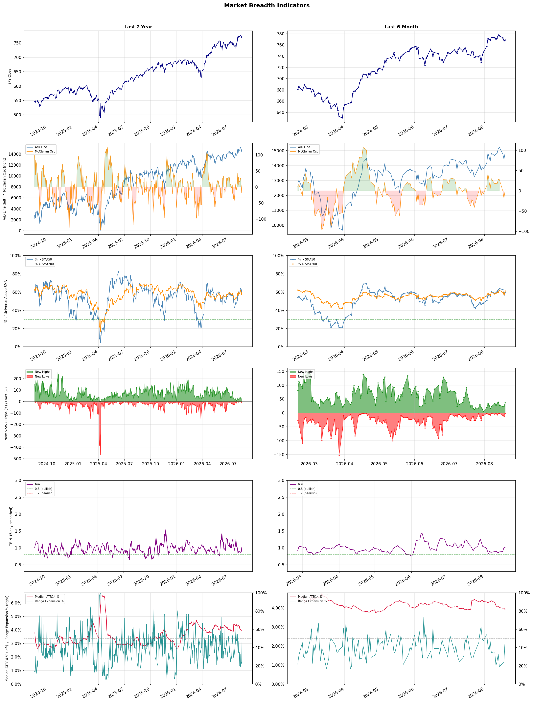

A daily market breadth and sector rotation report for active investors
| Item | Read |
|---|---|
| Regime | Selective Risk-On |
| Risk posture | Selective |
| Universe | 1,331 stocks tracked · 37 new 52-week highs · 30 active swing setups |
| Breadth | 59.3% of tracked stocks are above SMA50 — neutral range, new highs exceed new lows (37 vs 2) |
| Leadership | Diagnostics & Research, Health Information Services, and Software - Application |
| Weakest groups | Utilities - Independent Power Producers, Solar, and Footwear & Accessories |
Use this report to prioritize research and chart review; validate entries, stops, liquidity, earnings, and risk before acting.
| Item | Read |
|---|---|
| Primary read | Selective Risk-On regime with Selective risk posture. |
| Research queue | TWST, WGS, NTRA, IQV, OPK |
| Leadership focus | Diagnostics & Research, Health Information Services, and Software - Application |
| Caution list | Utilities - Independent Power Producers, Solar, and Footwear & Accessories |
| Review prompt | Check extension risk, chart location, fundamentals, valuation, and earnings before using any research row. |
| Item | Read |
|---|---|
| Primary read | 1 active risk warnings; use screen output as watchlist input only. |
| Bullish screens | ACAD, IMMX, SLS, JNJ, LLY |
| Bearish screens | none |
| Alerts / levels | Automated trigger, stop, ATR, liquidity, reward/risk, and event-risk levels are pending future enrichment. |
| Review prompt | Open the linked chart, define trigger and invalidation, then check liquidity and event risk independently. |
Risk Posture: Selective — screen backdrop supports selective research in leading industries
Metric context: McClellan below -50 = elevated selling pressure; below -100 = washout territory. Range Expansion = share of stocks with daily range above their 20-day average. Signal Density = share of tracked names appearing in signal screens.
| Breadth Date | % > SMA50 | % > SMA200 | New Highs | New Lows | McClellan | Median Range | Avg Range | Median ATR14 | Range Expansion | Signal Density |
|---|---|---|---|---|---|---|---|---|---|---|
| 2026-08-19 | 59.3% | 61.2% | 37 | 2 | 2.8 | 3.6% | 4.3% | 3.9% | 49.8% | 9.8% |

Prior comparison date: August 18, 2026
| Metric | Prior | Current | Change |
|---|---|---|---|
| Regime | Selective Risk-On | Selective Risk-On | unchanged |
| Risk Posture | Selective | Selective | unchanged |
| % > SMA50 | 56.3% | 59.3% | +3.0 pts |
| % > SMA200 | 59.8% | 61.2% | +1.4 pts |
| New Highs | 28 | 37 | +9 |
| New Lows | 10 | 2 | +8 |
Top-10 industries entering: Gold and Medical Instruments & Supplies. Top-10 industries leaving: Computer Hardware and Software - Infrastructure. New multi-signal long setups: ABNB, DX, EC, IMMX, JNJ, KO, LLY, PFE, PR, SHEL. New multi-signal short setups: none.
| Status | Tickers | Read |
|---|---|---|
| Added | ABNB, ABT, BKSY, BRO, CERT, DOCS, DX, DXCM | New technical screen matches vs prior report. |
| Removed | ARRY, BMY, CRSR, CVE, ENVX, GILD, GME, HALO | No longer present in today's technical screen matches. |
| Still Active | ACAD, APPS, AVR, BXSL, EQNR, FSLY, GRND, OBDC | Appeared in both current and prior reports. |
| Promoted | none | Model Screen Score improved by at least 15 points. |
| Downgraded | none | Model Screen Score declined by at least 15 points. |
| Direction | Industry | ETF | Prior Rank | Current Rank | Days | Rank Change |
|---|---|---|---|---|---|---|
| Rose | Gold | GDX | 86 | 8 | 42 | +78 |
| Rose | Copper | COPX | 87 | 11 | 42 | +76 |
| Rose | Oil & Gas E&P | XOP | 78 | 16 | 42 | +62 |
| Rose | Oil & Gas Integrated | XLE | 73 | 15 | 42 | +58 |
| Rose | Aerospace & Defense | ITA | 85 | 43 | 35 | +42 |
Bull: Gold is rising in relative strength primarily due to a significant decline in Treasury yields, as highlighted by the recent headlines regarding Bessent's bond buyback plan, which has made gold more attractive as a non-yielding asset. Additionally, the bullish sentiment is further supported by the surge in gold prices reaching $4,400, indicating strong demand and investor confidence, particularly in gold miners like Newmont, which has seen substantial gains. This combination of falling yields and robust performance in gold-related equities suggests a favorable macroeconomic environment for gold investments.
Bear: While the recent decline in Treasury yields has indeed provided a temporary boost to gold prices, this rally may be short-lived as it is primarily driven by macroeconomic factors that could reverse, such as potential rate hikes or inflationary pressures. Additionally, the significant gains in gold miners like Newmont may reflect speculative trading rather than sustainable demand, especially as investors may be overestimating the long-term viability of gold as a hedge against economic uncertainty, particularly when alternatives like silver are being touted as better investments. Furthermore, the headlines suggesting a bullish sentiment could be masking underlying weaknesses in the sector, such as rising production costs and geopolitical risks that could undermine future profitability.
Verdict: Gold is rising in relative strength primarily due to a significant decline in Treasury yields, as highlighted by the recent headlines regarding Bessent's bond buyback plan, which has made gold more attractive as a non-yielding asset. Additionally, the bullish sentiment is further supported by the surge in gold prices reaching $4,400, indicating strong demand and investor confidence, particularly in gold miners like Newmont, which has seen substantial gains. This combination of falling yields and robust performance in gold-related equities suggests a favorable macroeconomic environment for gold investments.
Sources: Yahoo Finance, Google News
Bull: Copper is experiencing rising relative strength primarily due to its critical role in the electrification and AI sectors, as highlighted by the headlines discussing its potential as a "pick-and-shovel" trade for AI and the electrification squeeze. Additionally, the significant price appreciation of copper-related investments, such as the COPX ETF, which has surged 115% in a year, underscores strong demand driven by infrastructure investments and the transition to renewable energy sources. This bullish sentiment is further supported by the recent focus on copper mining stocks, indicating investor confidence in the sector's growth prospects.
Bear: While the rising relative strength of copper may seem promising, this surge is largely driven by speculative trading and short-term market trends rather than sustainable demand fundamentals. The headlines highlighting copper's role in electrification and AI could be overhyped, as the long-term demand for copper is subject to significant volatility due to potential economic slowdowns, geopolitical tensions, and the rapid advancement of alternative technologies that may reduce copper's necessity. Moreover, the impressive 115% increase in the COPX ETF could be a classic case of a bubble, where prices are inflated beyond their intrinsic value, making it vulnerable to a sharp correction as market realities set in.
Verdict: The copper industry's rising trend is fundamentally driven by robust demand from the electrification and renewable energy sectors, as well as increased infrastructure investments, which have significantly boosted prices and investor interest. However, a key risk lies in the potential for speculative trading to inflate prices beyond sustainable levels, coupled with the threat of economic slowdowns and advancements in alternative technologies that could diminish copper's long-term necessity. Investors should remain cautious and monitor market conditions closely to avoid potential corrections.
Sources: Yahoo Finance, Google News
Bull: The Oil & Gas E&P sector, represented by the XOP ETF, is experiencing rising relative strength primarily due to the significant surge in oil prices, which recently topped $100 for the first time since May, driving increased profitability for exploration and production companies. Additionally, the positive momentum in stock performance for key players like Antero Resources and Magnolia Oil & Gas, as highlighted in recent headlines, indicates strong investor sentiment and potential for continued growth in the sector. This bullish outlook is further supported by the ETF's strategic positioning, as it holds fewer bets than competitors, allowing for more focused exposure to high-performing stocks in a recovering commodity market.
Bear: While the rising oil prices may seem beneficial for the XOP ETF, this surge is largely driven by geopolitical tensions and supply constraints that could prove to be temporary. Furthermore, the ETF's focus on fewer bets could expose it to higher volatility and risk, particularly if key players like Antero Resources and Magnolia Oil & Gas face operational challenges or if global demand falters due to economic slowdowns or shifts towards renewable energy. Investors should be cautious, as the current rally may not be sustainable in the face of these underlying risks.
Verdict: The Oil & Gas E&P sector's recent rise is fundamentally driven by a significant increase in oil prices, propelled by geopolitical tensions and supply constraints, which have enhanced profitability for exploration and production companies. However, investors should remain cautious of the potential volatility and risks associated with this rally, particularly if operational challenges arise for key players or if global demand weakens due to economic slowdowns or a shift towards renewable energy. It is advisable to closely monitor these factors before making investment decisions in the sector.
Sources: Yahoo Finance, Google News
Bull: The Oil & Gas Integrated sector is experiencing rising relative strength primarily due to increasing fair value estimates for major oil stocks, driven by higher oil prices, as highlighted by Morningstar. Additionally, the positive sentiment surrounding energy stocks, evidenced by their advance in afternoon trading and the overall uptick in exchange-traded funds alongside US equities, suggests a robust demand and investor confidence in the sector's resilience amid broader market fluctuations.
Bear: While rising oil prices and increasing fair value estimates may seem promising, they often mask underlying vulnerabilities in the Oil & Gas Integrated sector, such as geopolitical risks, regulatory pressures, and the ongoing transition to renewable energy sources. Furthermore, the recent mixed performance of energy stocks and the broader market's reliance on macroeconomic factors, including potential interest rate hikes and inflation concerns, could undermine the sustainability of this upward trend, suggesting that investor confidence may be more fragile than it appears.
Verdict: The Oil & Gas Integrated sector's rising relative strength is fundamentally driven by increasing oil prices and higher fair value estimates for major stocks, reflecting strong demand and investor confidence. However, key risks remain, including geopolitical uncertainties and regulatory pressures, which could jeopardize the sector's growth amid a broader market influenced by macroeconomic factors like interest rate hikes and inflation. Investors should remain cautious and monitor these risks closely while considering positions in the sector.
Sources: Yahoo Finance, Google News
Bull: The Aerospace & Defense sector is experiencing rising relative strength primarily due to increased defense spending and robust earnings reports from key players like Lockheed Martin and RTX, which reported significant growth and record backlogs. This trend is further supported by the ongoing geopolitical tensions and the need for enhanced national security, as highlighted in the headlines discussing the extension of defense spending plays beyond traditional ETFs and the bullish outlook for defense stocks despite some volatility in the drone segment.
Bear: While the Aerospace & Defense sector may currently exhibit rising relative strength, this could be misleading given the volatile nature of the market, particularly in the drone segment where stocks like Red Cat have seen significant declines. Furthermore, the recent earnings beats from major players may not be sustainable in the long term, as increased defense spending could be offset by budget constraints and shifting geopolitical priorities, which may ultimately lead to a correction in the sector as investors reassess the durability of current growth trends.
Verdict: The Aerospace & Defense sector's rising strength is fundamentally driven by heightened defense spending in response to geopolitical tensions, coupled with strong earnings from major players like Lockheed Martin and RTX, which are benefiting from substantial backlogs. However, a key risk lies in the potential for budget constraints and shifting geopolitical priorities that could undermine the sustainability of this growth, particularly if volatility in segments like drones continues to affect investor confidence. Investors should monitor these dynamics closely to assess the durability of the current bullish trend.
Sources: Yahoo Finance, Google News
| Direction | Industry | ETF | Prior Rank | Current Rank | Days | Rank Change |
|---|---|---|---|---|---|---|
| Fell | Airlines | N/A | 3 | 76 | 42 | -73 |
| Fell | REIT - Healthcare Facilities | XLRE | 3 | 73 | 28 | -70 |
| Fell | Integrated Freight & Logistics | N/A | 16 | 81 | 28 | -65 |
| Fell | REIT - Retail | N/A | 11 | 74 | 28 | -63 |
| Fell | Healthcare Plans | IHF | 5 | 67 | 42 | -62 |
Bear: While the bull analyst attributes the decline in relative strength to sector-wide profit warnings and rising operational costs, it's crucial to recognize that these challenges are not merely short-term fluctuations but indicative of deeper structural issues within the airline industry. The persistent volatility in fuel prices, coupled with labor disputes and a potential recession, could lead to sustained pressure on profitability, making airlines less attractive investments. Furthermore, the shift in consumer behavior post-pandemic, with increased preference for remote work and alternative travel options, may dampen demand for air travel in the long run, undermining the recovery narrative.
Bull: The recent decline in relative strength for the airline industry can be attributed to sector-wide profit warnings and increased scrutiny on profitability, as highlighted in headlines from Barron's and 24/7 Wall St. These warnings likely stem from rising operational costs, including fuel prices and labor expenses, which have pressured margins across major carriers like Delta and American Airlines. Additionally, investor sentiment may be swayed by the perception of a slowing recovery post-pandemic, leading to cautious outlooks and potential shifts in investment towards other sectors, as suggested by the discussions in Investor's Business Daily and The Motley Fool.
Verdict: The airline industry's recent decline can be fundamentally attributed to rising operational costs, including volatile fuel prices and labor expenses, which are squeezing profit margins amid a cautious post-pandemic recovery. The key risk highlighted by the bear thesis is the potential for sustained profitability pressure due to structural issues, such as changing consumer behavior and economic uncertainty, which could further dampen demand for air travel. Investors should closely monitor these factors and consider reallocating investments to sectors less susceptible to these challenges.
Sources: Google News
Bear: While the bull analyst points to a shift in investor interest as a temporary phenomenon, the sustained relative weakness in the Healthcare Facilities REIT sector raises concerns about underlying fundamentals that may be deteriorating. The recent headlines focusing on financial stock declines suggest broader economic instability, which could lead to tighter credit conditions and reduced investment in healthcare facilities, a sector already grappling with rising operational costs and reimbursement pressures. Furthermore, the bullish sentiment from sources like The Motley Fool and Morningstar may overlook the fact that healthcare REITs could face significant headwinds from regulatory changes and demographic shifts that could impact occupancy rates and rental income in the long term.
Bull: The relative weakness of the Healthcare Facilities REIT sector may be attributed to broader market concerns affecting financial stocks, as indicated by the recent headlines highlighting declines in the financial sector. Additionally, the focus on other REITs, such as Simon Property and Federal Realty, suggests a shift in investor interest towards more traditional retail and diversified real estate, potentially sidelining healthcare facilities. However, the positive outlook from sources like The Motley Fool and Morningstar regarding the best healthcare REITs indicates that long-term fundamentals remain strong, positioning these REITs favorably for future growth despite current relative underperformance.
Verdict: The recent decline in the Healthcare Facilities REIT sector appears to stem from broader market concerns, particularly related to financial instability, which could tighten credit conditions and hinder investment in healthcare properties. Key risks include rising operational costs and reimbursement pressures, compounded by potential regulatory changes and demographic shifts that may negatively impact occupancy rates and rental income. Investors should closely monitor these factors while considering the long-term fundamentals that may still support growth in this sector.
Sources: Yahoo Finance, Google News
Bear: While the bull analyst points to emerging markets as a potential growth area, this shift could also indicate a lack of confidence in the domestic Integrated Freight & Logistics sector, suggesting that investors are fleeing to regions with perceived higher returns due to stagnation or declining growth prospects at home. Furthermore, the significant drop in GXO Logistics highlights a broader trend of sector-wide selling that may be indicative of fundamental weaknesses, such as rising operational costs, labor shortages, and increased competition, which could further suppress profitability and investor interest in the sector.
Bull: The Integrated Freight & Logistics sector is experiencing a decline in relative strength primarily due to heightened volatility and sector-wide selling, as evidenced by GXO Logistics' significant 11.3% drop amid broader market concerns. Additionally, the focus on growth plans in emerging markets like India, as highlighted in the Univest article, suggests that investors may be reallocating capital towards regions with higher growth potential, further pressuring the sector domestically. This shift, combined with the mixed performance of major players like FedEx, indicates underlying challenges that are impacting investor sentiment in the Integrated Freight & Logistics industry.
Verdict: The Integrated Freight & Logistics sector is likely experiencing a decline due to rising operational costs, labor shortages, and increased competition, which are eroding profitability and investor confidence. The significant drop in GXO Logistics exemplifies broader sector weaknesses, suggesting that investors are reallocating capital to emerging markets amid concerns of stagnation in domestic growth. The key risk from the bear case is that continued sector-wide selling could exacerbate these fundamental challenges, leading to further declines in investor sentiment and market performance.
Sources: Google News
Bear: While the bull analyst attributes the relative weakness of Retail REITs to broader economic concerns, it's essential to recognize that the retail landscape is undergoing a fundamental transformation driven by e-commerce growth and changing consumer preferences. This shift not only pressures traditional brick-and-mortar retailers but also raises questions about the long-term viability of retail properties, leading to potential oversupply and declining valuations. Furthermore, the emphasis on high-yielding retail REITs may mask underlying risks, as investors may be drawn to yield without fully accounting for the potential for capital depreciation and increased vacancy rates in a challenging retail environment.
Bull: The relative weakness of the Retail REIT sector can be attributed to broader economic concerns, including rising interest rates and inflation, which have pressured consumer spending and retail performance. As highlighted in the Morningstar article, the overall real estate sector is currently outperforming, suggesting that investors may be favoring other segments over retail due to concerns about the sustainability of retail demand, especially amid a shrinking REIT sector as noted by Garry Marr in Yahoo! Finance Canada. Additionally, the emphasis on high-yielding retail REITs in the Steady article indicates that while some investors are seeking income, the overall sentiment may still be cautious regarding the retail landscape's recovery trajectory.
Verdict: The Retail REIT sector's decline is primarily driven by the ongoing transformation of the retail landscape due to e-commerce growth and shifting consumer preferences, which threaten the viability of traditional retail properties and may lead to oversupply and declining valuations. Investors should be cautious of high-yielding retail REITs, as the allure of income may obscure significant risks such as potential capital depreciation and rising vacancy rates in an increasingly challenging retail environment. It is advisable to closely monitor the performance of individual REITs and assess their adaptability to these market changes before making investment decisions.
Sources: Google News
Bear: While the bull analyst attributes the sector's relative weakness to profit-taking and a temporary pullback, the ongoing uncertainty surrounding regulatory changes, rising operational costs, and potential reimbursement cuts from government programs pose significant headwinds that could undermine future earnings growth. Furthermore, the mixed Q2 results indicate that the underlying fundamentals may not be as robust as suggested, raising concerns about the sustainability of the defensive nature and innovation touted by the sector's proponents. As a result, the bearish outlook on Healthcare Plans may be more justified, given the potential for prolonged volatility and downward pressure on stock prices.
Bull: The relative weakness in the Healthcare Plans sector, as indicated by the falling trend against other industries, can be attributed to recent profit-taking following the strong performance of major players like UnitedHealth, which recently pulled back after reaching a 52-week high. Additionally, mixed Q2 results and uncertainty surrounding future earnings, as highlighted in the headlines discussing analyst predictions for UnitedHealth and Humana, may have contributed to investor caution, overshadowing the sector's defensive nature and ongoing innovations that are typically seen as attractive long-term drivers.
Verdict: The Healthcare Plans sector's recent decline appears driven by profit-taking after strong performances from major players, compounded by mixed Q2 results that have raised investor concerns about future earnings. However, the key risk highlighted by the bear case is the uncertainty surrounding regulatory changes and rising operational costs, which could significantly impact profitability and lead to prolonged volatility in stock prices. Investors should remain cautious and closely monitor regulatory developments and operational metrics before making any commitments in this sector.
Sources: Yahoo Finance, Google News
| Industry | Rank | ETF | 7d | 14d | 28d | 42d | Chg 42d | Size | 20D | 60D | Composite | Active Setups |
|---|---|---|---|---|---|---|---|---|---|---|---|---|
| Diagnostics & Research | 1 | N/A | 1 | 1 | 2 | 7 | +6 | 16 | 18.2% | 60.5% | 0.980 | 0 |
| Health Information Services | 2 | N/A | 4 | 22 | 6 | 8 | +6 | 12 | 20.6% | 51.3% | 0.949 | 0 |
| Software - Application | 3 | IGV | 3 | 8 | 35 | 38 | +35 | 74 | 18.3% | 25.5% | 0.899 | 1 |
| Biotechnology | 4 | XBI | 14 | 45 | 18 | 1 | -3 | 91 | 15.2% | 36.0% | 0.896 | 2 |
| Oil & Gas Refining & Marketing | 5 | CRAK | 5 | 2 | 1 | 11 | +6 | 7 | 6.8% | 33.2% | 0.884 | 0 |
| Insurance Brokers | 6 | N/A | 9 | 24 | 17 | 12 | +6 | 6 | 14.0% | 24.5% | 0.879 | 0 |
| Medical Devices | 7 | N/A | 2 | 21 | 41 | 24 | +17 | 20 | 14.7% | 22.6% | 0.863 | 0 |
| Gold | 8 | GDX | 19 | 46 | 84 | 86 | +78 | 25 | 32.5% | 12.4% | 0.828 | 0 |
| Medical Care Facilities | 9 | IHF | 11 | 16 | 8 | 6 | -3 | 9 | 8.0% | 25.0% | 0.827 | 0 |
| Medical Instruments & Supplies | 10 | N/A | 10 | 7 | 25 | 34 | +24 | 13 | 10.2% | 24.2% | 0.816 | 0 |
Rank columns (7d–42d) show the industry's rank that many trading days ago — lower is stronger. Chg 42d = rank change vs 42 trading days ago — positive means the industry moved up. 20D and 60D are the mean stock return within the industry over that period. Active Setups: count of today's swing-trade candidates from this industry appearing across all signal screens.
| Industry | Rank | ETF | 7d | 14d | 28d | 42d | Chg 42d | Size | 20D | 60D | Composite | Active Setups |
|---|---|---|---|---|---|---|---|---|---|---|---|---|
| Utilities - Independent Power Producers | 88 | XLU | 85 | 87 | 68 | 66 | -22 | 5 | -7.4% | -13.7% | 0.055 | 0 |
| Solar | 87 | TAN | 88 | 85 | 81 | 71 | -16 | 8 | -10.0% | -28.8% | 0.077 | 0 |
| Footwear & Accessories | 86 | N/A | 86 | 69 | 36 | 45 | -41 | 5 | -10.7% | -5.5% | 0.094 | 0 |
| Chemicals | 85 | N/A | 87 | 88 | 77 | 84 | -1 | 8 | -8.0% | -24.0% | 0.129 | 1 |
| Electrical Equipment & Parts | 84 | XLI | 76 | 82 | 82 | 49 | -35 | 12 | -8.8% | -30.8% | 0.159 | 0 |
| REIT - Diversified | 83 | N/A | 82 | 77 | 46 | 60 | -23 | 5 | -6.2% | -2.8% | 0.205 | 0 |
| Utilities - Renewable | 82 | N/A | 77 | 86 | 86 | 81 | -1 | 6 | -3.9% | -21.1% | 0.206 | 0 |
| Integrated Freight & Logistics | 81 | N/A | 83 | 73 | 16 | 44 | -37 | 7 | -12.0% | -1.9% | 0.228 | 0 |
| Semiconductors | 80 | SOXX | 69 | 76 | 61 | 43 | -37 | 38 | -6.9% | -17.5% | 0.241 | 1 |
| Utilities - Regulated Electric | 79 | XLU | 78 | 75 | 45 | 42 | -37 | 29 | -3.8% | -1.6% | 0.249 | 0 |
Rank columns (7d–42d) show the industry's rank that many trading days ago — lower is stronger. Chg 42d = rank change vs 42 trading days ago — positive means the industry moved up. 20D and 60D are the mean stock return within the industry over that period. Active Setups: count of today's swing-trade candidates from this industry appearing across all signal screens.
These are research candidates from top-ranked stocks, capped at five names per industry to avoid over-concentration. Returns shown (60D, 120D, 250D) are historical — they reflect where prices have already moved, not forward expectations. Extension Risk flags names that may require extra patience or a better entry point. They are not buy signals.
Chart: TV = TradingView chart (opens in browser); PDF = local chart file (if downloaded).
| Ticker | Name | Industry | Industry Rank | Market Cap | 60D Hist | 120D Hist | 250D Hist | Extension Risk | Research Reason | Chart |
|---|---|---|---|---|---|---|---|---|---|---|
| TWST | Twist Bioscience | Diagnostics & Research | 1 | N/A | 187.7% | 196.1% | 406.4% | Very extended | Top-ranked in industry; very extended | TV |
| WGS | GeneDx Holdings | Diagnostics & Research | 1 | N/A | 89.1% | -8.5% | -37.0% | Extended | Top-ranked in industry; extended | TV |
| NTRA | Natera | Diagnostics & Research | 1 | N/A | 58.6% | 55.1% | 101.7% | Extended | Top-ranked in industry; extended | TV |
| IQV | IQVIA Holdings | Diagnostics & Research | 1 | N/A | 48.5% | 46.1% | 29.8% | Constructive | Top-ranked in industry | TV |
| OPK | Opko Health | Diagnostics & Research | 1 | N/A | 15.0% | 21.7% | 5.0% | Constructive | Top-ranked in industry | TV |
| TXG | 10x Genomics | Health Information Services | 2 | N/A | 162.6% | 181.0% | 365.5% | Very extended | Top-ranked in industry; very extended | TV |
| SDGR | Schrodinger | Health Information Services | 2 | N/A | 65.6% | 76.9% | 2.5% | Extended | Top-ranked in industry; extended | TV |
| VEEV | Veeva Systems | Health Information Services | 2 | N/A | 58.6% | 42.2% | -11.7% | Extended | Top-ranked in industry; extended | TV |
| HTFL | Heartflow | Health Information Services | 2 | N/A | 55.9% | 98.0% | 48.5% | Extended | Top-ranked in industry; extended | TV |
| TEM | Tempus AI | Health Information Services | 2 | N/A | 32.6% | 10.5% | -16.4% | Constructive | Top-ranked in industry | TV |
| NIQ | NIQ Global Intelligence | Software - Application | 3 | N/A | 114.2% | 47.3% | 6.0% | Very extended | Top-ranked in industry; very extended | TV |
| TEAM | Atlassian | Software - Application | 3 | N/A | 104.0% | 119.4% | 4.6% | Very extended | Top-ranked in industry; very extended | TV |
| U | Unity Software | Software - Application | 3 | N/A | 84.2% | 140.6% | 31.4% | Extended | Top-ranked in industry; extended | TV |
| WDAY | Workday | Software - Application | 3 | N/A | 54.8% | 42.6% | -12.8% | Extended | Top-ranked in industry; extended | TV |
| RNG | RingCentral | Software - Application | 3 | N/A | 52.0% | 78.5% | 125.4% | Extended | Top-ranked in industry; extended | TV |
| MRNA | Moderna | Biotechnology | 4 | N/A | 272.0% | 237.2% | 548.5% | Very extended | Top-ranked in industry; very extended | TV |
| ABCL | AbCellera Biologics | Biotechnology | 4 | N/A | 131.0% | 234.5% | 188.0% | Very extended | Top-ranked in industry; very extended | TV |
| IOVA | Iovance Biotherapeutics | Biotechnology | 4 | N/A | 94.4% | 110.8% | 215.8% | Extended | Top-ranked in industry; extended | TV |
| OMER | Omeros | Biotechnology | 4 | N/A | 60.5% | 59.2% | 338.9% | Extended | Top-ranked in industry; extended | TV |
| CAI | Caris Life Sciences | Biotechnology | 4 | N/A | 45.0% | 25.1% | -36.7% | Constructive | Top-ranked in industry | TV |
These are technical screen matches from existing signal files. They are not trade recommendations. Trigger, stop, ATR, liquidity, reward/risk, and event risk still require separate validation until those inputs are available.
Model Screen Score is weighted by signal count, industry rank, freshness, and setup type. It is not a probability of profit, expected return, or suitability rating. Industry cap: max 3 candidates per industry.
Signal glossary: Momentum Pullback = stock in an uptrend that has pulled back 10–30% and shows re-entry conditions. MA Compression = short- and long-term moving averages converging, often preceding a directional move. Three-Day Up/Down = three consecutive closes in the same direction. New 52Wk High/Low = price reached a new annual extreme.
Chart: TV = TradingView chart (opens in browser); PDF = local chart file (if downloaded).
| Ticker | Industry | Setups | Close | Industry Rank | Signal Count | Model Screen Score | Reason | Chart |
|---|---|---|---|---|---|---|---|---|
| ACAD | Biotechnology | New 52Wk High; Three-Day Up | 30.21 | 4 | 2 | 93 | Multi-signal; top industry breakout | TV |
| IMMX | Biotechnology | New 52Wk High; Three-Day Up | 13.19 | 4 | 2 | 93 | Multi-signal; top industry breakout | TV |
| SLS | Biotechnology | Momentum Pullback; Three-Day Up | 13.85 | 4 | 2 | 93 | Multi-signal; top industry pullback | TV |
| JNJ | Drug Manufacturers - General | New 52Wk High; Three-Day Up | 273.41 | 12 | 2 | 85 | Multi-signal; new-high strength | TV |
| LLY | Drug Manufacturers - General | New 52Wk High; Three-Day Up | 1280.34 | 12 | 2 | 85 | Multi-signal; new-high strength | TV |
| PFE | Drug Manufacturers - General | New 52Wk High; Three-Day Up | 28.24 | 12 | 2 | 85 | Multi-signal; new-high strength | TV |
| EC | Oil & Gas Integrated | New 52Wk High; Three-Day Up | 17.89 | 15 | 2 | 85 | Multi-signal; new-high strength | TV |
| EQNR | Oil & Gas Integrated | New 52Wk High; Three-Day Up | 42.03 | 15 | 2 | 85 | Multi-signal; new-high strength | TV |
| SHEL | Oil & Gas Integrated | New 52Wk High; Three-Day Up | 92.77 | 15 | 2 | 85 | Multi-signal; new-high strength | TV |
| PR | Oil & Gas E&P | New 52Wk High; Three-Day Up | 23.02 | 16 | 2 | 77 | Multi-signal; new-high strength | TV |
| SM | Oil & Gas E&P | New 52Wk High; Three-Day Up | 36.14 | 16 | 2 | 77 | Multi-signal; new-high strength | TV |
| TEVA | Drug Manufacturers - Specialty & Generic | New 52Wk High; Three-Day Up | 37.47 | 17 | 2 | 77 | Multi-signal; new-high strength | TV |
| ABNB | Travel Services | New 52Wk High; Three-Day Up | 186.39 | 21 | 2 | 77 | Multi-signal; new-high strength | TV |
| KO | Beverages - Non-Alcoholic | New 52Wk High; Three-Day Up | 90.35 | 60 | 2 | 65 | Multi-signal; new-high strength | TV |
| DX | REIT - Mortgage | MA Compression; Three-Day Up | 13.33 | 49 | 2 | 60 | Multi-signal; compression setup | TV |
| APPS | Software - Application | Momentum Pullback | 11.23 | 3 | 1 | 65 | Single-signal; top industry pullback | TV |
| FSLY | Software - Application | Momentum Pullback | 23.66 | 3 | 1 | 65 | Single-signal; top industry pullback | TV |
| GRND | Software - Application | Momentum Pullback | 15.59 | 3 | 1 | 65 | Single-signal; top industry pullback | TV |
| CERT | Health Information Services | Three-Day Up | 8.36 | 2 | 1 | 55 | Single-signal; top industry setup | TV |
| DOCS | Health Information Services | Three-Day Up | 25.75 | 2 | 1 | 55 | Single-signal; top industry setup | TV |
| SDGR | Health Information Services | Three-Day Up | 19.85 | 2 | 1 | 55 | Single-signal; top industry setup | TV |
| TENB | Software - Infrastructure | Momentum Pullback | 35.28 | 13 | 1 | 50 | Single-signal; pullback setup | TV |
| BRO | Insurance Brokers | Three-Day Up | 71.49 | 6 | 1 | 48 | Single-signal; top industry setup | TV |
| MRSH | Insurance Brokers | Three-Day Up | 189.20 | 6 | 1 | 48 | Single-signal; top industry setup | TV |
| ABT | Medical Devices | Three-Day Up | 114.43 | 7 | 1 | 48 | Single-signal; top industry setup | TV |
| AVR | Medical Devices | Three-Day Up | 9.83 | 7 | 1 | 48 | Single-signal; top industry setup | TV |
| DXCM | Medical Devices | Three-Day Up | 89.88 | 7 | 1 | 48 | Single-signal; top industry setup | TV |
| BXSL | Asset Management | MA Compression | 24.56 | 14 | 1 | 45 | Single-signal; compression setup | TV |
| OBDC | Asset Management | MA Compression | 11.33 | 14 | 1 | 45 | Single-signal; compression setup | TV |
| BKSY | Specialty Business Services | Momentum Pullback | 27.90 | 22 | 1 | 42 | Single-signal; pullback setup | TV |
How To Use This Report
| Use | Purpose |
|---|---|
| Market map | Start with breadth, regime, risk warnings, and what changed since the prior report. |
| Industry scan | Use leading, deteriorating, rising, and declining industries to focus research. |
| Research queue | Treat long-term candidates as names for deeper fundamental, valuation, and chart review. |
| Technical review | Treat bullish and bearish screen matches as watchlist inputs that require independent trigger, stop, liquidity, and event-risk checks. |
| Source follow-up | Use chart links and source files to verify raw inputs before relying on any row. |
What This Report Is Not
| Not | Meaning |
|---|---|
| Investment advice | The report does not evaluate personal objectives, risk tolerance, tax situation, account type, or suitability. |
| Buy/sell recommendation | Named tickers are research candidates or screen matches, not recommendations to transact. |
| Price target | The report does not provide fair value estimates, targets, or expected returns. |
| Trade plan | Trigger, stop, sizing, reward/risk, liquidity, and event-risk review remain separate user work. |
| Performance claim | Model Screen Score is not validated historical performance or a forecast of future results. |
| Item | Note |
|---|---|
| Version | Daily Report Methodology v1 |
| Model Screen Score | Screen-fit rank based on signal count, industry rank, freshness, and setup type. |
| Not predictive proof | The score is not expected return, probability of profit, historical validation, or suitability analysis. |
| Industry ranks | Composite industry ranks use existing daily ranking outputs and historical rank columns when available. |
| Research candidates | Long-term rows are research candidates from ranked stocks and leading industries, with historical returns labeled as historical only. |
| Technical matches | Bullish and bearish rows are screen matches requiring independent chart, trigger, stop, liquidity, and event-risk review. |
| Source | Status | Rows | Path |
|---|---|---|---|
| Market breadth | present | 1253 | breadth_20260819.csv |
| Industry composite rankings | present | 88 | all_industry_composite_20260819.csv |
| Top ranked stocks | present | 273 | top_ranked_composite_20260819.csv |
| All ranked stocks | present | 1331 | all_stocks_composite_sorted_20260819.csv |
| Top momentum pullbacks | present | 1481 | top_momentum_pullbacks_20260819.csv |
| MA compression | present | 1481 | ma_compression_stocks_20260819.csv |
| Three-day up/down | present | 221 | three_day_up_down_stocks_20260819.csv |
| New 52-week members | present | 39 | breadth_new_52wk_members_20260819.csv |
This report is generated from automated technical screens and is for informational and research purposes only. It is not investment advice, a solicitation, or a recommendation to buy or sell any security. Past performance is not indicative of future results. You are solely responsible for your own investment decisions. Consult a licensed financial advisor before acting on any information herein.